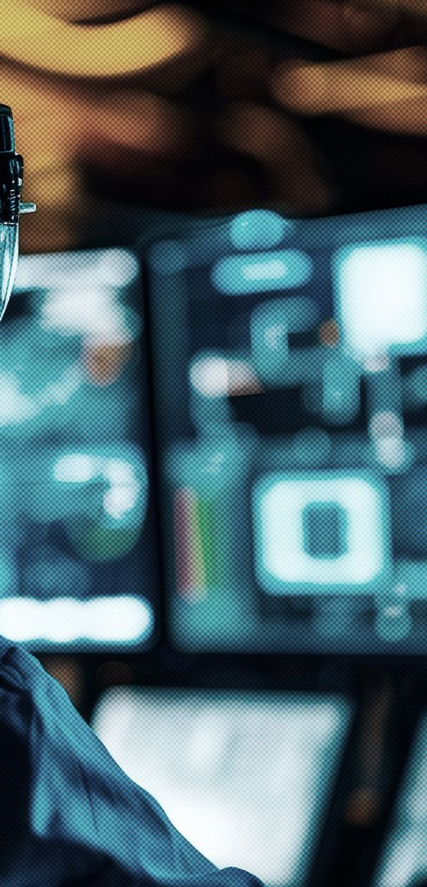

{{ L.eyebrow }}
{{ L.h1a }}{{ L.h1b }}{{ L.h1c }}
{{ L.lede1 }}
{{ L.lede2 }}
{{ L.claim }}
// {{ L.chKicker }}
{{ L.chTitle }}
!
{{ ch.t }}
{{ L.chClose }}

// ProMin
// {{ L.qsKicker }}
{{ L.qs1 }}
{{ L.qs2 }}
{{ L.qs3 }}
// {{ L.svcKicker }}
{{ L.svcTitle }}
{{ L.svcLede }}
{{ sv.title }}
{{ sv.desc }}

// {{ L.whyKicker }}
{{ L.whyTitle }}
{{ r.t }}
// {{ L.missionTag }}
{{ L.mission }}
// {{ L.visionTag }}
{{ L.vision }}
// {{ L.valuesTag }}